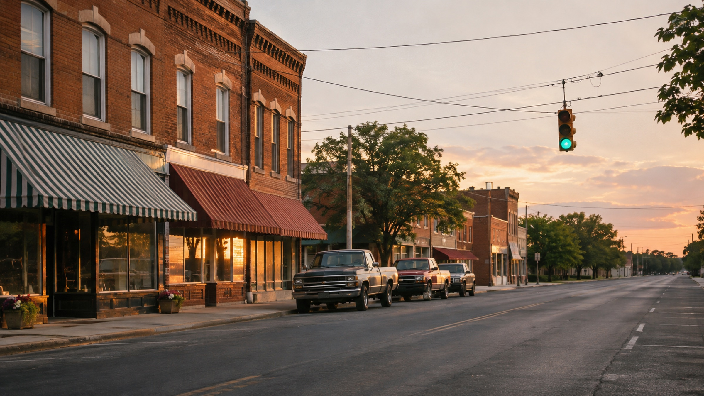

Akademska godinaGodina u američkoj srednjoj školi
Cijela školska godina u javnoj američkoj srednjoj školi, uz život u obitelji domaćinu. Upoznaješ drukčiji obrazovni sustav, sam biraš dio predmeta i uključuješ se u školske aktivnosti.
- 10 mjeseci
- Javna škola
- Obitelj domaćin